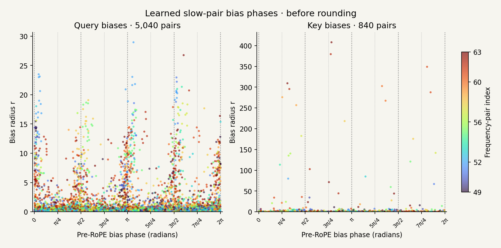
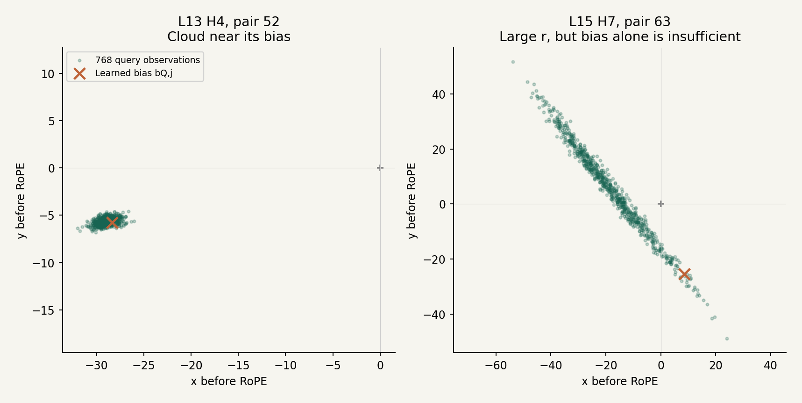
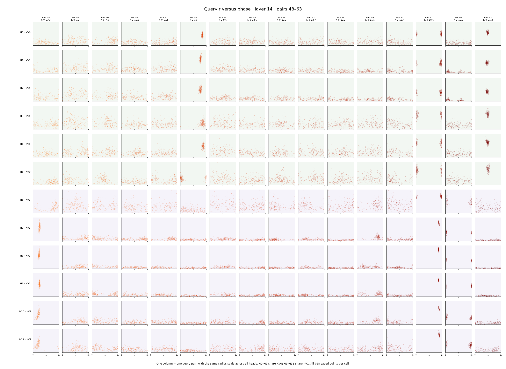
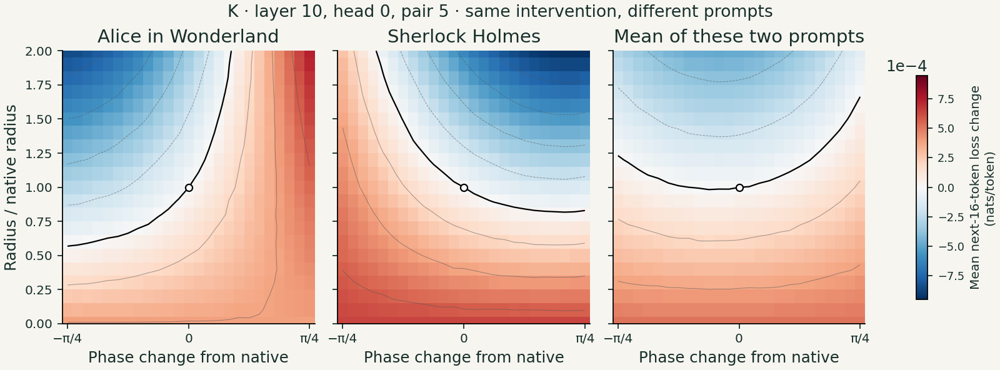
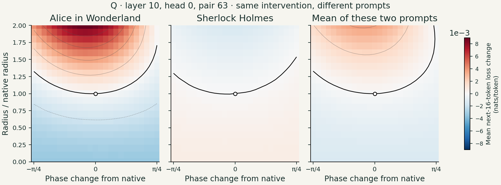
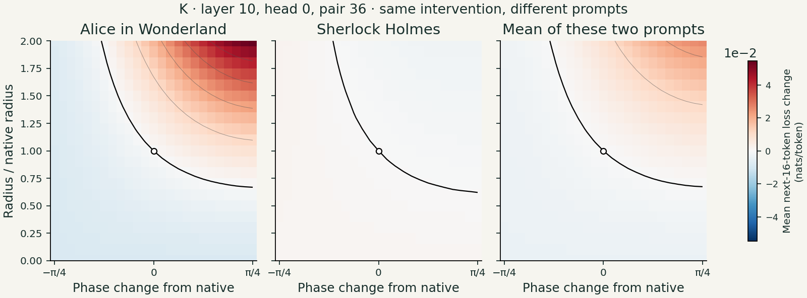

Attention and positional encodings · Part 2
Deep dive in ROPE pair data
After exploring what RoPE can express, I wanted to see what its coordinate pairs actually look like in a trained transformer. Could I characterize their structure—and would that structure suggest a way to compress attention keys or make attention faster?
The plots revealed plenty of structure: many small-radius pairs, recurring angular patterns, distinct clouds associated with projection biases, and similarities among query heads sharing a KV head. Those observations led me to experiments with coarser phase representations. Some small biases and selected key activations tolerated these changes well; the visibly aligned large biases were surprisingly sensitive.
The experiments pointed toward a compact polar representation, a direction already explored by PolarQuant. They also showed why average results are not enough: a phase adjustment can improve one prompt and degrade another. What follows is that journey, and why I think combining these findings with quantization-aware training is a promising route toward KV-cache compression and faster attention.
Looking at the coordinate pairs
Along the way, I also looked directly at the query and key coordinate pairs. These are the plots from that investigation, using Qwen2.5-1.5B-Instruct: all 28 layers, with 12 query heads and two shared key heads per layer. Each shared key head serves six query heads. The query plots contain 768 sampled tokens from 16 prose excerpts; the key plots contain all 2,379 prose tokens from those excerpts, excluding the chat prefix.
There are two ways to look at the same pairs. The Cartesian view shows the two coordinates directly; the other shows their amplitude and angle. In both, the known positional rotation has been removed to show the coordinates before RoPE. These are individual query or key angles, not the relative query–key angle of an attention score.
Loading the saved points for adjustable scales…
Layer 0 · 12 query heads · page 1 of 28

Observations
1. Most of the points are close to the origin
The first thing I noticed was how much of the picture lives at low amplitude. Across these saved pre-RoPE observations, 84.0% of query points and 75.5% of key points have r < 2.5. About 95% of both lie below 5. These counts refer to token × frequency-pair observations, not to a fraction of heads, and they describe this model and these excerpts.
The detached clouds at larger radii catch the eye, but they can make the much denser central region hard to inspect. That is why the viewer has manual r limits and a per-head percentile scale. A small radius also does not mean an unimportant attention contribution: the query magnitude and the sum over pairs matter too.
2. There is structure inside the dense region
Zooming into the low-r region, the phase distribution does not look like featureless noise. There are ridges, valleys, and wave-like changes in density as the angle varies. Query head L8 H3 is one example.

The learned biases—the constant offsets in the query and key projections—offer another view of this angular structure. In the slow query pairs, especially at larger radii, many bias phases cluster near multiples of π/2. The plot below places π/4 guides between them as well.

The guides at fractions of π make the angular structure easier to compare. Some bands run near those directions, but their shapes and positions vary with radius and pair. This is a visual observation, not evidence that every head locks its phases to exact fractions of π.
Another impression from these plots is that most pairs seem to make relatively little use of variation in radius r. Some elongated clouds, however, suggest that changes in magnitude may carry more input-dependent information. I would like to explore that distinction further: does varying r help these pairs select different keys, or mainly adjust how strongly they contribute? The cloud shapes suggest the question; they do not yet establish how the model uses radius.
3. The detached clouds and the projection biases
Many compact clouds far from the origin have an input-independent component: the learned bias in the query or key projection. For a query, before RoPE, the projection is:
Here h is the hidden state entering the projection, and j selects one coordinate pair. The bias bQ,j is the same for every input. If it dominates uj(h), the observations form a small cloud near that fixed offset. The equivalent key formula uses WK and bK.

The large-offset clouds have different degrees of input dependence. Compact, roughly round clouds tend to vary little around a stable offset; they look largely input-independent on these samples. Stretched clouds show stronger input-dependent variation along a preferred direction, as in the right-hand example. The useful clue is the spread relative to the offset, as well as the shape.
What did the held-out bias check establish?
For query pairs whose mean radius exceeded 5 on eight discovery excerpts, the bias-only predictor accounted for 72.5% of squared magnitude on eight other excerpts, relative to predicting zero. A fitted constant vector accounted for 83.0%. For large-mean key pairs, the bias-only result was 99.86%. These are energy-relative prediction fits, not variance explained around a mean. They support a substantial constant component, especially in the keys; they do not make every large query pair constant. Recomputed statistics · Original experiment summary.
4. Query heads sharing a KV head have similar structure
Query heads that share the same key/value head also seem to share recognizable structure in their query-pair embeddings. In this model, heads 0–5 use KV0 and heads 6–11 use KV1. That is not unexpected, but it is nice to see in the plots: compare the shapes within each group, then across the boundary.
Layer 14 · pairs 48–63 · original saved queries. Scroll sideways for individual pairs, or fit the whole sheet.

The dynamic version of layer_14_pairs_48_63.png, starting at that same layer and pair range. Every cell shows all 768 saved pre-RoPE query points. Compare vertically within a column: its radius scale is shared across all 12 heads; different columns have different ranges. Green and purple row bands identify the two KV groups. The model is the original checkpoint, without an amplitude adapter. Regenerate the saved sheet · Interactive plotting code.
Could we collapse nearby directions?
Given these observations, a natural question arises: could we round the angles of these short vectors to a few representative directions? A π/4 grid gives eight directions, requiring three phase bits; a π/2 grid gives four directions, requiring two. A π/3 grid would give six directions, still requiring three bits in a simple fixed-width code. I tested the first two grids rather than assuming the visible density determined the best codebook.
There is a geometric reason to try it. If we preserve a pair’s radius and change its phase by δ, the tip moves by:
At small r, the same angular change moves the vector less. That suggests a quantization experiment; it does not establish that the model can tolerate the change. Many small errors may combine, and a particular query may amplify one of them. The next section tests the effect on predictions.
From a pattern to a quantization experiment
First I tried the biases
The obvious starting point was the large, slow-pair query biases: their phases visibly clustered near fractions of π. I rounded the phases of bias pairs 49–63 with r > 2.5 to the nearest multiple of π/2, preserving their radii. Despite the apparent alignment, the result was poor.
Surprisingly, the smaller biases were much more tolerant. Applying the same two-bit phase rounding to bias pairs with r ≤ 2.5 left average loss and next-token accuracy almost unchanged. These were edits to the learned query bias constants, not the full query vectors; the keys and projection weights were unchanged.
| Selected biases | Pairs edited | Loss change (nats/token) | Accuracy change (percentage points) | Choices changed |
|---|---|---|---|---|
| r > 2.5 | 922 / 5,040 | +0.32115 | -4.49 | 31.63% |
| r ≤ 2.5 | 4,118 / 5,040 | -0.00339 | -0.13 | 4.98% |
Both runs covered 2,251 next-token predictions from 16 prose excerpts, with the bias edits applied in all 28 layers and at every token position. Small-bias rounding changed 4.98% of the model’s top choices, even though the average loss and accuracy barely moved. The recorded small condition uses r ≤ 2.5; the large condition uses r > 2.5.
Recomputed comparison · Large-bias outputs · Small-bias outputs · Runnable experiment.
A separate case: small, low-frequency key biases could be set to zero
There was an earlier change with almost no effect: removing small, low-frequency learned key biases. I set both coordinates of a bias pair to zero when its index was 49–63 and its original radius was below 2.5. This removed 707 of the 840 bias pairs in that band, across all 28 layers and both shared key heads.
On 16 prose excerpts, the recomputed loss increase was about 0.000009 nats/token, and just 1 of 2,251 next-token choices changed (0.044%). The input-dependent term WK,jh remained intact, and the edit applied at every token position. This is the near-zero-impact result from the earlier investigation: it removes a constant bias vector, rather than resetting the full key’s phase to zero. The surviving key still has an amplitude and a phase.
Recomputed result · Original per-token outputs · Runnable bias-removal experiment.
Then I moved from biases to queries and keys
That led me to explore quantizing queries and keys directly, rather than only their bias terms. A bias is a fixed offset; the full vector also contains the input-dependent projection. The comparison below focuses on actual key activations.
For this test, I selected low-frequency key pairs 49–63, and only token activations whose current pre-RoPE radius was r < 2.5. These are zero-based pair indices, fifteen of the head’s 64 pairs. Here the radius threshold is applied to each token’s full key pair, rather than to its learned bias. Both phase-rounding conditions use this same band and magnitude rule, at all token positions. I changed the selected phases, kept their radii at full precision, and ran the model again to see whether its predictions survived.
For a uniform angular codebook with b bits, the rounding rule is:
This returns to the slow-frequency discussion. A weak positional rotation made these pairs interesting candidates for coarse coding, but their learned content angles could still matter. This experiment tests how coarsely those angles can be represented; it does not merely remove a small position-dependent rotation.
I applied this selection through all 28 layers and both shared key heads, at all token positions. The magnitude threshold was applied to the actual key activation, not to the learned bias alone. Later activations were recomputed. The evaluation covered 7,168 next-token predictions from four previously used book excerpts, each with 2,062 input tokens.
| Selected phase coding | Loss increase (nats/token) | Next-token choices changed |
|---|---|---|
| 2 bits: nearest π/2 | +0.01824 | 7.63% |
| 3 bits: nearest π/4 | +0.00170 | 3.19% |

pi2_small and pi4_small in the saved results. Recomputed from the original per-token outputs, with the intervention applied at all token positions. “Changed” means different from the baseline, not necessarily incorrect. Conditions selected about 52–54% of the slow-pair instances; downstream changes affect which later pairs meet the radius threshold.Three-bit rounding had a small average loss effect on these excerpts; two-bit rounding had a larger cost. The values above come from recomputing the all-position runs: 547 of 7,168 next-token choices changed with two bits, and 229 with three bits. “Changed” means different from the baseline, not necessarily incorrect.
These four excerpts were already part of the investigation. The result encouraged coarse phase coding, but leaves open how it behaves on new tasks and long-distance retrieval.
An average can hide what happens to individual prompts
The small average loss changes made me look more closely. I swept the phase and radius of one actual query or key pair at a time, before RoPE, then recomputed the model’s loss. Repeating the sweep on a different passage changed the landscape: the same adjustment could help one prompt and hurt another.
Each figure below follows the same layer, head, and coordinate pair in two passages. The horizontal axis changes its phase by up to ±π/4; the vertical axis scales its radius from zero to twice its native value. Blue means lower loss, red means higher loss. The lines join equal-loss changes; the thick black line marks zero change. The white circle is the native vector. Each figure uses one color scale across its three panels.

For example, with this key pair’s radius unchanged, a phase shift of about −0.327 radians changed loss by roughly −0.000160 nats/token on the Alice passage and +0.000160 on the Sherlock passage. Their mean was almost zero. This is an illustrative grid point identified after inspecting the sweeps, not a representative average effect.


These are single-token activation edits, with all later computation recomputed. Loss is averaged over the next 16 teacher-forced tokens, relative to each passage’s native baseline. The source positions are “door” in Alice in Wonderland and “tobacco” in The Adventures of Sherlock Holmes. These three examples come from the original exploratory sweeps; they are not restricted to the slow band or the r < 2.5 selection used in the quantization table.
The lesson for compression is that a small mean error can conceal prompt-specific degradation and improvement. I would want to inspect that distribution, as well as the mean, when choosing a quantizer. Regenerate these plots · Recomputed values · Original sweep files and hashes.
A potential opportunity for KV-cache compression
Together, the structure in the pairs and the quantization experiments suggest an opportunity to compress the KV cache, particularly its keys, using a representation built around pair radii and phases. Wu and colleagues’ PolarQuant (NeurIPS 2025) has explored this direction: it quantizes paired key coordinates in polar form and uses lookup-based query–key scoring.
To pursue the full benefit, I would combine this representation with quantization-aware training (QAT). Instead of imposing rounding only after training, QAT simulates quantization during training so the model can adapt to the representation it will actually use. Jacob and colleagues describe this training principle. Applying it to these RoPE-paired keys could help the model accommodate prompt-dependent sensitivity while using fewer bits; that is a next experiment, rather than an outcome established by the tests here.
What this exploration suggests
I started by trying to characterize RoPE pair data. The recurring shapes, angular preferences, bias offsets, and similarities within shared-KV groups made it clear that there is significant structure to investigate. That structure offers clues about where a more compact representation might be useful.
The quantization experiments showed why those clues need testing. The large, visibly aligned query biases were sensitive to phase rounding, while the smaller biases tolerated it much better. Selected small, slow key activations also tolerated three-bit phase coding with a small average loss change on these excerpts. Appearance alone did not tell me which components could be simplified.
The phase-sensitivity plots add another part of the story: prompts can have different equal-loss contours, and opposing changes can cancel in the average. I see a potential opportunity for KV-cache compression in the structure of these pairs, with PolarQuant providing a published example of polar key coding. My next step would be to combine that representation with QAT, letting the model adapt to quantization while checking quality across individual prompts as well as aggregate benchmarks.
Reproduce these observations and results
The model plots use the original saved activation data, split losslessly by layer. This reproduction script regenerates all 70 plot pages and all four PDFs. The original point counts, sampled token positions, and file hashes are included. The interactive viewer draws the saved points directly and lets you adjust r and phase ranges. The PDFs retain their fixed scales. Both include dotted gray angular guides. The plotting and NPZ-reading code is in scatter-viewer.mjs and scatter-data.mjs.
python code/reproduce_observations.py --verify
python code/reproduce_observations.py --kind queries --view xy --page 0
# Regenerate all 70 pages and all four PDFs:
python code/reproduce_observations.py --pdfFirst run recompute_phase_results.py to recompute the phase and bias-removal results from the saved per-token outputs. This reanalysis does not run fresh model inference.
The observations figures, density bins, amplitude counts, bias checks, and quantization chart are regenerated by observations.py, using the saved activations, extracted projection biases, and recorded intervention results.
python code/recompute_phase_results.py
python code/bias_phase_results.py
python code/observations.py
python code/slow_bias_phases.py
python code/head_pair_atlas.py --layer 14 --start 48
python code/phase_sensitivity.pyThe direct key-phase intervention is available as a runnable model experiment. The sensitivity figures are regenerated from the posted original loss grids, without fresh model inference.
Source and editing on GitHub · References: RoFormer; Fourier Position Embedding (§2.2); NumPy DFT conventions.